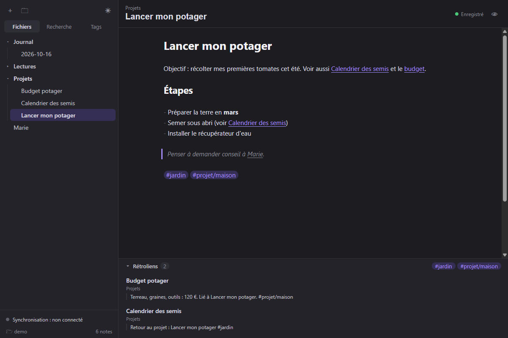
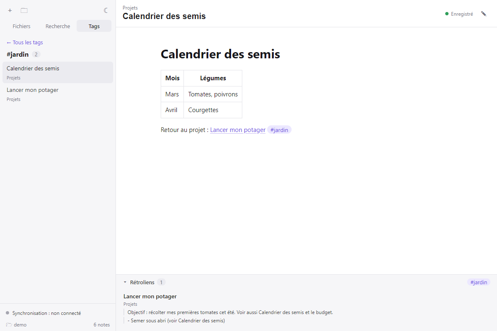

Vos notes, partout,
sans rien céder.
ObsiLan est une application de prise de notes en Markdown pour Windows et Android. Vos notes sont de simples fichiers, reliées entre elles, et synchronisées entre vos appareils par un serveur privé.
Version 0.4.0 · gratuite · sans publicité · guide d'installation

Tout ce qu'il faut, rien de trop
Une application légère pensée pour écrire vite et retrouver ses idées.
Markdown en direct
Titres, gras, listes, tableaux, code… mis en forme pendant que vous écrivez.
Liens entre notes
Écrivez [[Une note]] pour relier vos idées. Renommer une note met à jour tous ses liens.
Rétroliens
Sous chaque note, voyez quelles autres notes y font référence, avec le contexte.
Tags
#projet, #projet/maison… et un onglet pour parcourir vos notes par tag.
Recherche instantanée
Dans toutes vos notes, sans tenir compte des accents ni des majuscules.
Synchronisation
PC et téléphone restent à jour. Hors ligne, tout fonctionne ; la synchro reprend toute seule.
Graphe
Visualisez les liens entre vos notes, pour tout le coffre ou autour de la note ouverte.
Note du jour et modèles
Un clic pour le journal du jour ; des modèles avec date et titre remplis automatiquement.
Images et PDF
Collez une capture d'écran ou déposez un fichier : il est rangé et synchronisé avec la note.
Historique
Retrouvez une ancienne version d'une note, comparez-la et restaurez-la en un clic.
Vos fichiers vous appartiennent
Chaque note est un fichier .md ordinaire dans un dossier de votre appareil.
Vous pouvez les ouvrir avec n'importe quel éditeur, ou avec Obsidian : la syntaxe est la même.
- Aucune perte de données : écritures sécurisées, corbeille, versions conservées.
- Conflits gérés : si une note est modifiée sur deux appareils, les changements sont fusionnés ; sinon les deux versions sont gardées.
- Aucun pistage : ni publicité, ni statistiques, ni service tiers caché.

Prêt à essayer ?
L'installation prend une minute. Le guide explique tout, étape par étape.
Voir le guide d'installation